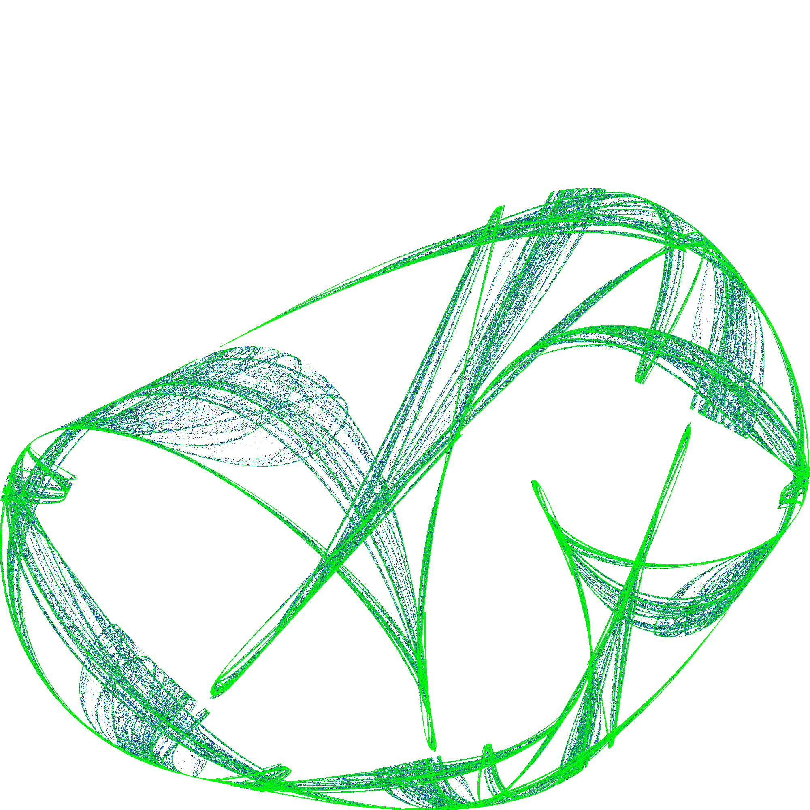
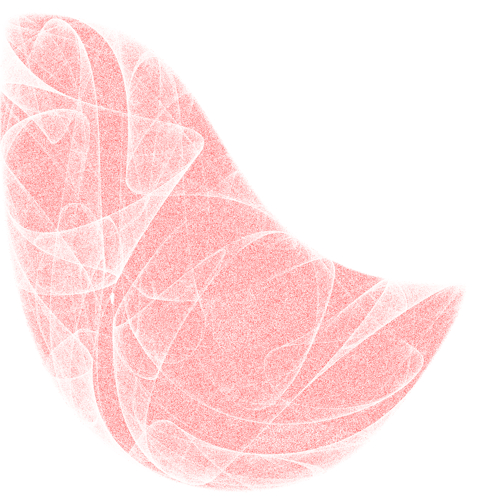
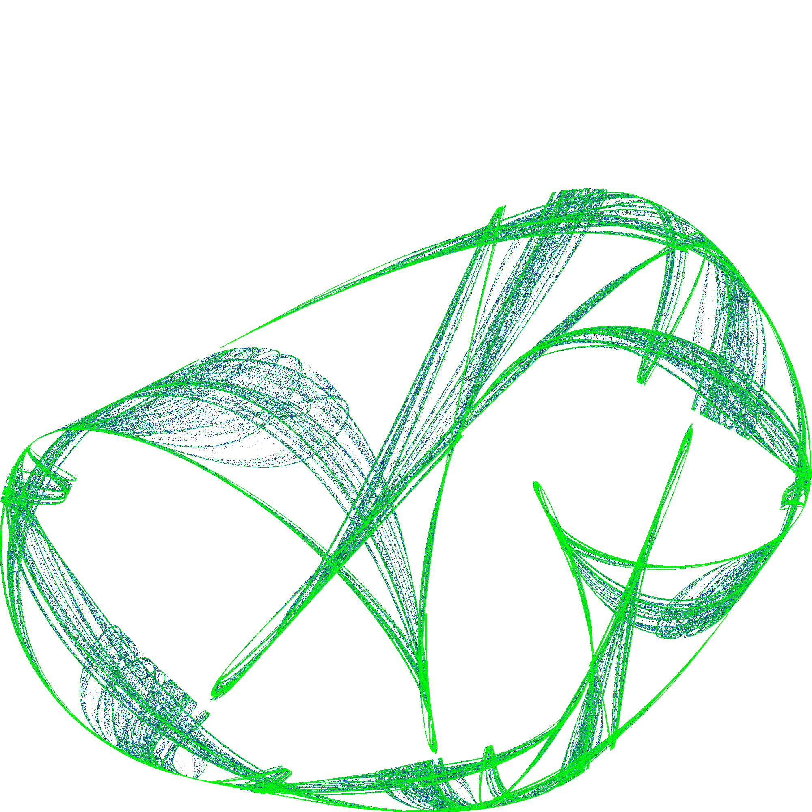
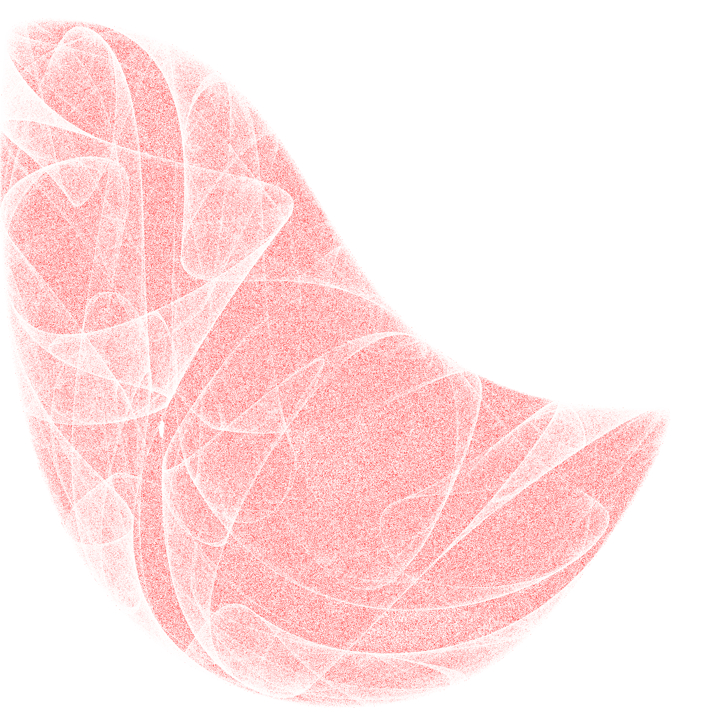
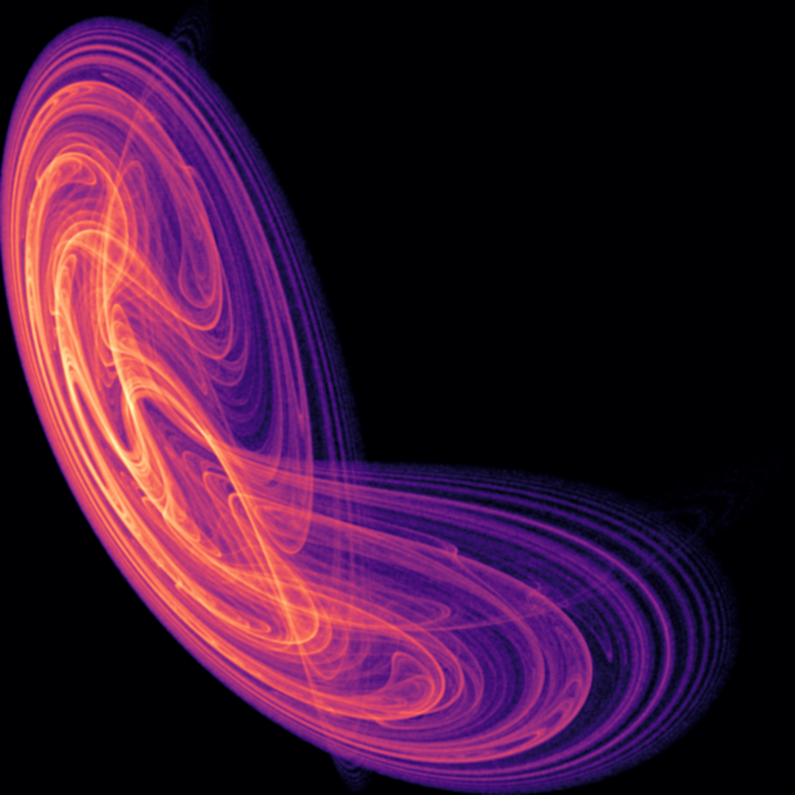
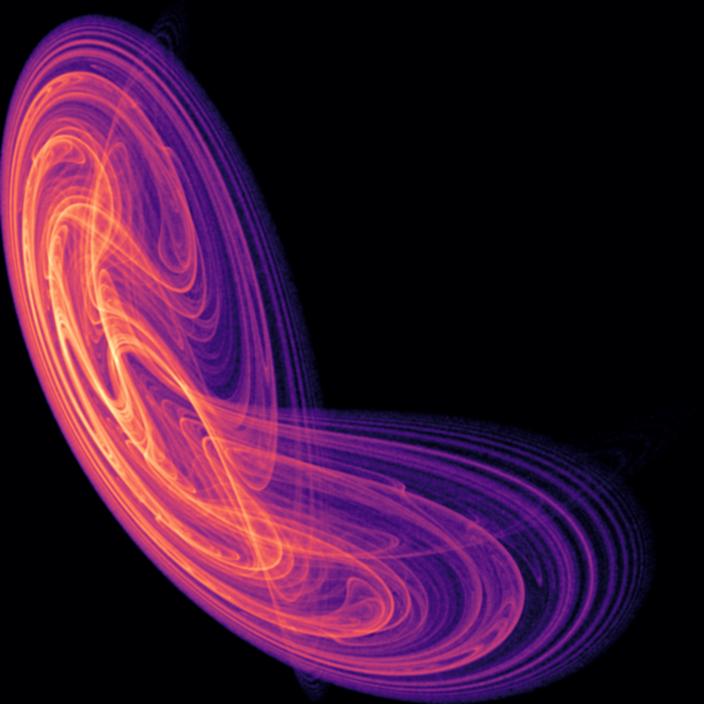

Gallery
A series of 2D strange attractors I recently created while playing around with some code.
Colors are interpolated with exponential and cosine functions from an star to an end color (top three images) or a histogram of the density of points (bottom three images, using numpy's magma colormap).
 



 


A cool Evangelion gif from episode 26